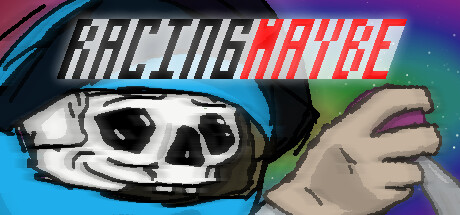
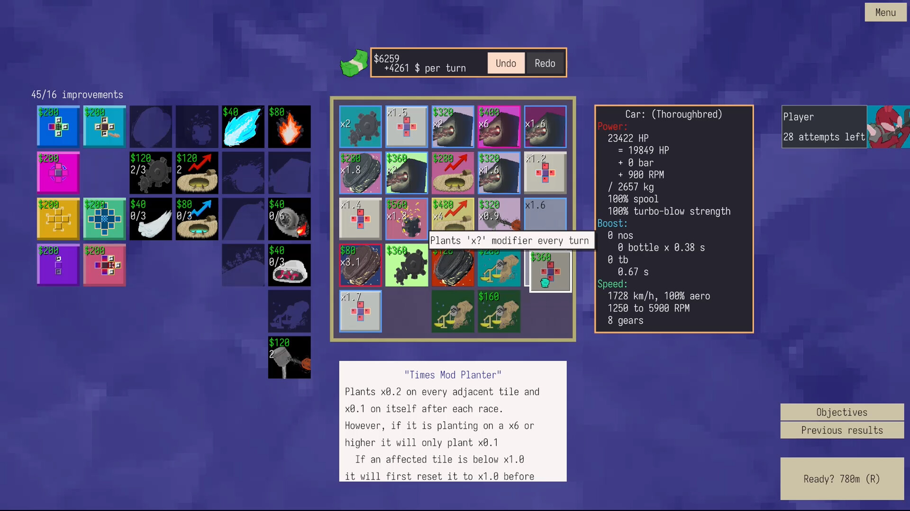

Racingmaybe
What sort of mind dreams up this masterpiece?

Racingmaybe is a uniquely complex drag-racing game that is focused more on designing a vehicle that reaches physically impossible speeds than it is about standard racing mechanics. The core of the game revolves around racing to the finish line within a short time-limit, then upgrading your car to go at it again. Each round uses up an attempt and gives you a shorter time limit than the last. The ultimate goal is to survive until you design a car than can hit the main time goal for the level, which is usually absurdly low at less than one second. The maximum speed you can reach is, obviously, the speed of light. I've tested it myself.

While there are fews games like this one, it probably remains obscure because of its niche, complicated game mechanics, and it hasn't been picked up by many YouTubers. It might've just been a game that was designed for the creator's friends, like Wordle was.